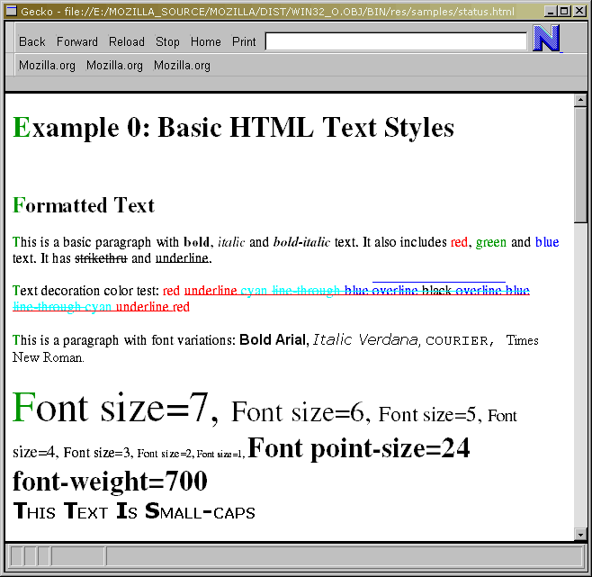
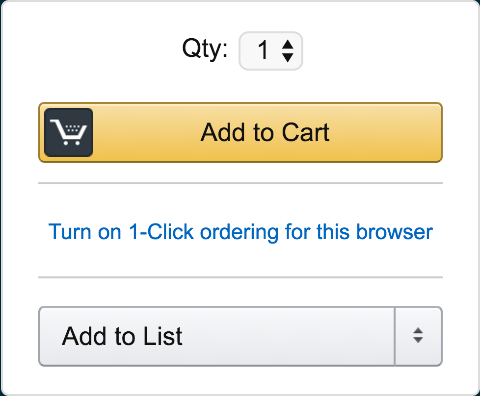
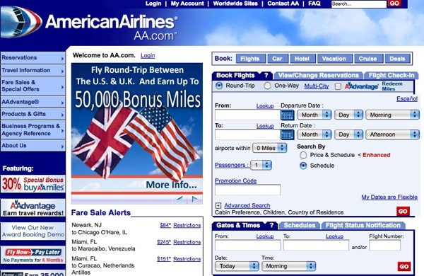
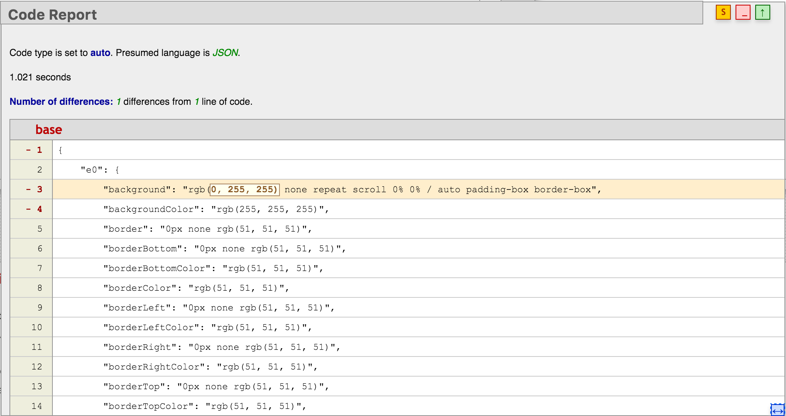

Testing the Cascade
Hello WebDevCon! This is Testing the Cascade . It's a talk on CSS testing. If you stumbled in here looking for JDD's talk on Lodash, you're in the wrong place. Please stick around—I don't blame you if you don't. Lodash is one of the most important JavaScript utility libraries right now.
Thank you for joining me today as we explore this interesting and severely underrecognized area of web development.
Hans Sprecher
www.hanssprecher.com | @honzie
My name's Hans Sprecher. You can find me on the web, hanssprecher.com, and on Twitter, @honzie. I currently work for Time Inc. We don't—unfortunately—make time machines, Tardises (Tardi?), DeLoreans, or even watches. But in a sense, we make Time.
In the same sense, we make LIFE and People. We're a large branded media company that even has brands with more than one word in their title. My favorite—Horse and Hound.
But before working in publishing, I worked at a local book shop.
And massive shout out to Amazon for hosting this event and opening it up to the public—both speakers and attendees. This is my fourth time speaking here—it's a delight to see it grow and open up.

ca. 1999, from www.mozillazine.org
So, I realized the other day—I've been coding for more than half my life. This is roughly what the web looked like when I started. Actually, this was a couple years after starting. And I'd like to begin with the story of my first page.
But, not webpage page. Pager page.
The terrifying type of page. I was going to play the audio. Have a beautiful recording of the pager audio. But that is almost certainly against the Geneva convention.
I was working on an application within a b2b platform. My team owned both applications on the site as well as the platform architecture. One of the things we wanted to add was a CSS reset and a series of utility classes.
Utility Classes
.none {
display: none;
}
.left {
float: left;
}
.right {
float: right;
}
Utility classes—like the type every developer has. These are some of mine. It seems like everyone has a dozen classes they carry around from project to project. A framework. A set of tools.
Was .left used?
One of the benefits of utility classes is easy-to-remember names that work everywhere in the project. One of the downsides is that easy-to-remember names are likely used elsewhere.
So, we looked at our code and the code of other applications on our platform to see who was using the class.
Comprehensive?
No.
Could exist in HTML
Could exist in JS
Programmatically constructed
Returned from AJAX injection
The deployment went smoothly, and a new feature was added to the dashboard. We basked in post-release bliss for a brief period of time.
Just like pad-left breaking the internet, class left broke one of our tenants.
What happened? Another app was using the same class name. It wasn't caught because the CSS and HTML files that included it weren't indexed in the search tool we were using. For full disclosure, we were not using Google.
I
Namespacing Classes
We can use namespaces. By namespacing classes, their influence is limited. That's an upside. Two downsides. (1) this removes some of our ability to fully use the cascade, limiting CSS' effectiveness—and code re-use. (2) and potentially more serious: namespacing isn't checked while writing code.
II
Scoping CSS
We can scope our CSS. A couple options exist. (1) Load only on pages that need it. Downside: extra HTTP requests—at least until we are on HTTP2—and doesn't solve for pages with multiple teams contributing to it. (2) Use technology that strictly sandboxes CSS, like React or Web Components.
III
Testing
We can test, automatically looking at our CSS to ensure it fulfills our needs. This is what I want to focus on today.
Why?
CSS is Declarative.
But, why bother? CSS is a declarative language.
4 Scope &
A CSS declaration is read and acted on as written by the browser.
That's not how we write CSS.
There's a difference between how we write CSS in practice and how we go about understanding how to represent a design in CSS.
Declaring Each Property
No Cascade
Only Override Defaults
Let's imagine a world without a cascade. Where every DOM node needs to have every non-default style overridden.
83 kB 11,939 kB
Amazon, for an unrecognized user, transfers a scant 83kb of minified CSS to the user.
Amazon: Original: 82.6 kB, Rendered: 12-20.5 MB (incognito vs logged in).
130 kB 20,138 kB
Facebook: Original: 130, Rendered: 20 MB
302 kB 8,854 kB
TIME: Original: 302, Rendered: 9 MB.
35 kB 2,062 kB
A List Apart: Original: 35 kB, Rendered: 2 MB
Power of Cascade
Brand
Increase
Amazon
0.7%
Facebook
0.6%
Time
3.4%
A List Apart
1.7%
Great CSS Captures Design
Great Good CSS Captures Design
Consider a section with a header and text.
Let's imagine that the section's font size changes. It gets a bit bigger. Should the header become larger? Should they remain the same size? The answer could be the difference between using em and rem units.
With Bootstrap, both header and text are coded in pixels, so they are independent—just like if we used rems. However, the font color inherits for both elements.
CSS is crafted. It is opinionated. The browser defaults have opinions about reading content. Responsive design and table-based designs approach the fundamental design direction of the web from two sides. Frameworks and themes have opinions. Bootstrap has opinions.
Otherwise—were these opinions not important, these tools would have worked better.
www.alistapart.com/article/material-honesty-on-the-web
Photo Casey Marshall
Opinions give CSS its grain. As one of three languages we work with in the browser, this grain defines the material of the web.
Like other designed objects, the best results are often derived when the work is honest to the medium it is crafted in. Consider the Eames lounge chair—a modern classic. It works with the grain (so to speak) of the plywood it is crafted with. A List Apart has a great article on materially honest design that's well worth a read.
Integration
Does it play nice?
Plain Demo
Shopping is hard. Let's write CSS.
Who likes live demos? I do. They go horrifically wrong in new and exciting ways. So, let's look at a set of tests written off of the redlines from our designer. Remember the declarative language? We change some semicolons and commas.
Framework Demo
More realistic complexity.
Unit Isolation

But how can we ensure the test only probes a 'unit' of code? CSS can be deep and complex.
We can render a page with only a block on it. The buy box might seem too large, or too small. I think it's pretty goldilocks-sized.
Unit Test Layout
<!DOCTYPE html>
<html>
<head>
<meta charset="utf-8">
<title>Unit Test Layout</title>
<link rel="stylesheet" href="defaults.css">
{block-styles}
</head>
<body>
{block}
{block-test-scripts}
</body>
</html>
Isolating Styles
index.styl:
@require 'header'
@require 'article'
> stylus header/index.styl --out ./header.css
> stylus article/index.styl --out ./article.css
Relative Styles
// 'frame' is the Quixote test frame.
var header = frame.get("#header");
var navbar = frame.get(".navbar");
navbar.assert({
top: header.bottom.plus(10),
left: frame.page().left,
width: frame.viewport().width
});
Unit Tools
Quixote
Hardy
CSS U
Selenium
The majority of CSS testing tools seem to be built around unit testing. Quixote is the most fluid and powerful. It is the spiritual successor to Hardy. CSS U was what we did our first demo in and is written as an extremely lightweight tool specifically for this talk. And Selenium has built-in supprot for style testing.
The only CSS tests I've owned in production were in Selenium. It wasn't the most fun to write in, which hampered our adoption. Used to have a red and a green lava lamp. The green lit up when all tests failed. Bless Selenium. The red one was always on. Einstein's definition of insanity doesn't at all work for selenium.
Integration
Unit testing works in isolation and is good for test driven development (kidding). Most importantly, unit testing ensures our code meets our specs.
The tech behind unit testing—computing the properties of a rendered DOM can be leveraged for integration tests.

www.fastcompany.com/1288618
This is where integration testing hits its stride. In 2009, Dustin Curtis reimagined the American Airlines homepage and posted it on his blog. An American employee (think it was a senior UX designer) commented back that the homepage was the cummulative work of several dozen teams. That's a fairly massive integration.
Run All Tests
<!DOCTYPE html>
<html>
...
<body>
...
{#test-scripts}
<script src="{.}"></script>
{/test-scripts}
</body>
</html>
Our first plan is to take the conjunction of our integration tests. This is straightforward, since HTML and CSS act globally.
Benefits
Catches overly broad changes
Increases confidence in refactors
Photo By ori2uru
Writing well-integrated CSS is like pouring champagne into a champagne tower and watching it cascade down to the bottom. The entire structure feels unstable. But it's so graceful.
Of course, since it's unstable, it's easy to knock down. That's when the party gets interesting, but you have to get more champagne saucers.
Deploying CSS feels like setting up a perfect spread on a table and then pulling out the tablecloth and seeing if the candles are still standing.
Reference Snapshot
Define canonical snapshot
Compute styles from Frozen DOM
Display diff
Define new snapshot
Regression testing follows a pattern. Define what things currently look like, see what the new version looks like, find the difference, and then declare the new snapshot to be proper if it looks like how we expect.
Brand
Increase
Amazon
0.7%
Facebook
0.6%
Time
3.4%
A List Apart
1.7%
Earlier in the talk, when I showed this table, it was built off of a computed stylesheet for an entire DOM.
Hashed Output
1WjQjFEhaUrZQnduRU7HwgrP+61eVtQPCXF2QqTRvu8=
MBnRDpjsEOHQIyp7dU6Bi9b1rd671RW7hr7jU9hWfhM=
We can compute a hash based on the computed stylesheet. When these hashes are the same, no styles on the page were affected.
Output Diff

And this allows us to view the difference between the computed stylesheets when there is a difference.
Image Diff
https://en.wikipedia.org/wiki/File:Spot_the_difference.png
Hashing and comparing 20mb stylesheets can be slow, and the output is arcane. A better solution might come from the Sunday comics. Remember sitting on a carpet as a kid trying to find all the changes between two images?
This is The Drive. It's a site my team owns about cars and car culture. On the left is the production version. On the right is a local version I was playing with. It has a different header.
By comparing these two sites, I can see—highlighted in blue—what my changes were. It's important that the content on the sites is the same.
Wraith
github.com/BBC-News/wraith
The tool I'm using is called Wraith, and it was developed at the BBC.
Bugs: Gotta Catch them All Photo By Didier Desouens
Important Components
Navigation
Purchase flow
Hero images
Avoiding Testing
Tests can be expensive to write and maintain, and can add to the friction of releasing a new feature. They should be created after weighing the benefits of the additional cost against the risk of a regression. To this end, we should consider how to avoid writing tests.
One strategy, which we touched on earlier is to sandbox our components. This can be done with new technologies like React and web components. Although sandboxing all CSS removes some of the benefits of the cascade—used responsibly, it can be a powerful tool.
Static Analysis
Not all sites can use react—nor should they. But static analysis provides some strong alternatives by standardizing the CSS we write.
Naming Philosophies
Flat specificity frameworks
OOCSS
BEM
Class Prefixes
.u-: Utility.js-: JS hook.qa-: Test hook._h-: Hack
Confident CSS
These tools give us a new 'C' in 'CSS'.
We've created a stronger architecture for our styles and our views.
This reinforces quality in our products—fewer breaks and less regression.
By enabling us to move forward with confidence and refactor our CSS, we create cleaner sites with lower latency.
Slides: github.com/honzie/testing-the-cascade github.com/BBC-News/wraith
github.com/jamesshore/quixote
github.com/honzie/cssu
csste.st/